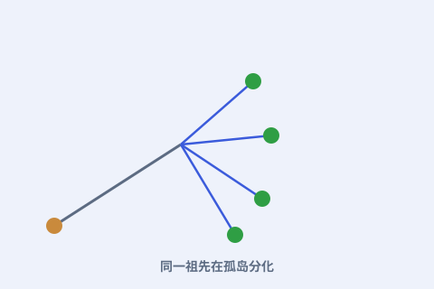

一、孤岛实验室
加拉帕戈斯是太平洋中的火山群岛，各岛彼此隔离又环境迥异。对生物来说，这里是天然的“分化实验场”。

二、喙各有不同
达尔文收集到的雀鸟，彼此亲缘很近，喙却差别明显：有的尖细吃虫，有的粗壮磕种子。这种“同中有异”，正是适应不同食物的痕迹。
三、干旱的考验
后来的研究（如格兰特夫妇）发现：干旱年份硬种子变多，喙更粗大的个体更容易存活繁殖，下一代平均喙就变粗——自然选择真的在发生，且快得能观测。
四、它说明了什么
这些雀鸟暗示：同一群祖先到了不同环境，会沿着不同方向积累适应，最终分化成不同种类。这正是进化论最生动的注脚。